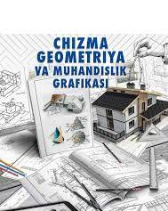
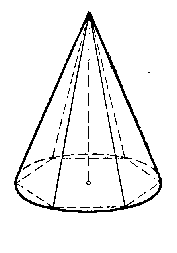
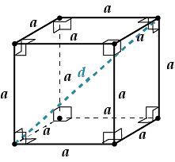
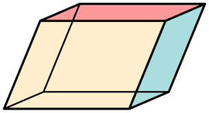

Chizma Geometriya

Fanni o‘qitishdan maqsad – “Muhandislik va kompyuter grafikasi” fanining asosiy maqsadi-bakalavriatura yo‘nalishlari talabalariga raqamli texnik chizmalarni bajarishni, ishlab chiqarishga xos konstruktorlik va texnik hujjatlarni tuzishni, fazodagi buyum yoki detallarning tekis chizmalarini chizish va o’qish qoidalarini o’rgatish.

Konus — asosi aylanadan iborat, yon yog'i aylanish sirti bilan chegaralanib, umumiy uchga ega bo'lgan fazoviy jism.

Kub — olti yog'i kvadratlardan tashkil topgan fazoviy jism.

Parallelepiped — asoslari parallelogrammdan iborat qaratna-qarshi yoqlarga ega bo'lgan fazoviy shakl.
Ortga Qaytish